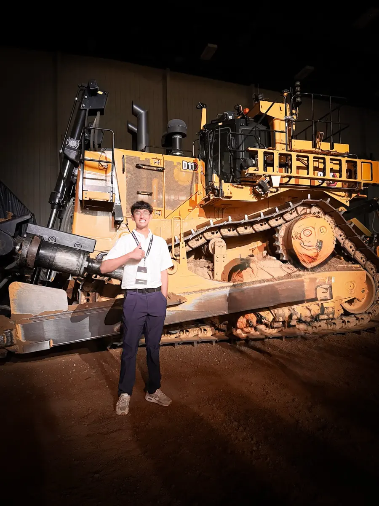

Embedded Controls Co-op · Technology Division · Aug 2025 - Present
I work on model-based vehicle controls in Simulink under production-code constraints: braking, traction, stability, and machine-state estimation functions built as modular software components that stay reusable across steering and propulsion variants.
- Refactored controls into reusable Simulink components with AUTOSAR-ready port interfaces shared across vehicle variants.
- I own V-model delivery for a single-channel brake-based ABS function: requirements, I/O definition, MIL, generated C, SIL/HIL, and machine-test planning.
- Built C++ SIL regression tests for the brake controller code.
- Built a dual-channel traction-control plant co-simulation (Simulink + Dynasty) with Stateflow drive cycles that ramp vehicle speed and sweep road-friction coefficients to stress slip response.
- Tuned brake/slip PID logic around legacy truck braking limits; reduced oscillations seen in real data by accounting for actuator physical constraints.
- Earlier in the co-op: situational speed target generators and wheel-level control logic, multi-rate sensing integration for IMU and wheel-speed streams, and Simulink-generated C for early ECM timing and sampling-rate feasibility checks.

Simulations Intern · GTMS · May 2025 - Aug 2025
In summer 2025 I supported Global Thermal Management Systems design decisions with thermal and CFD analyses for cooling systems.
- Ran thermal/CFD analyses that fed cooling-system design decisions.
- Helped the simulation group adopt NX Nastran workflows.